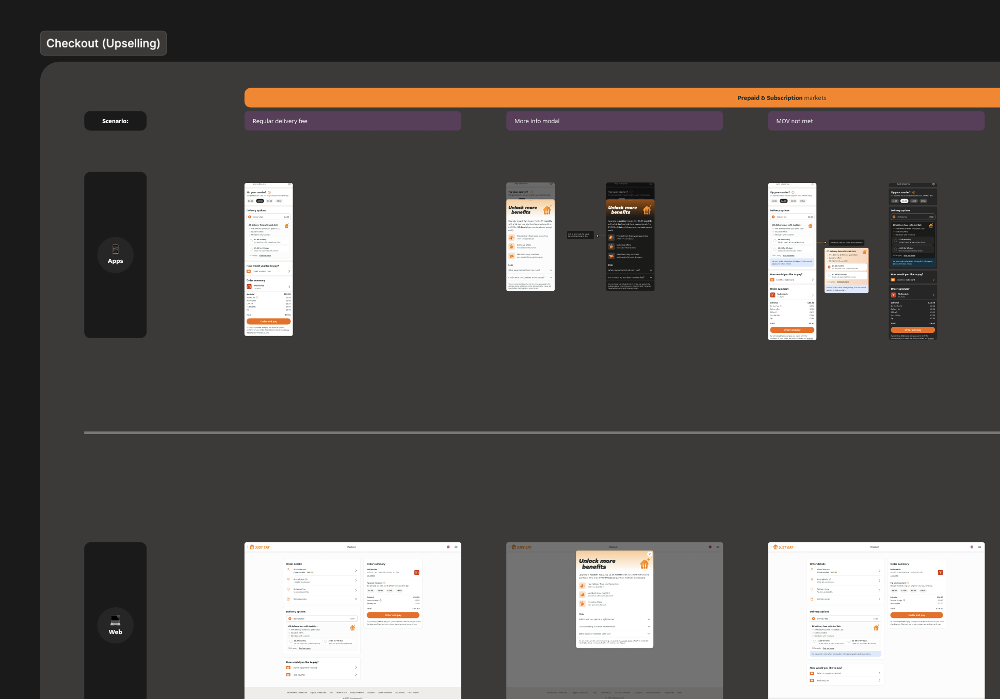
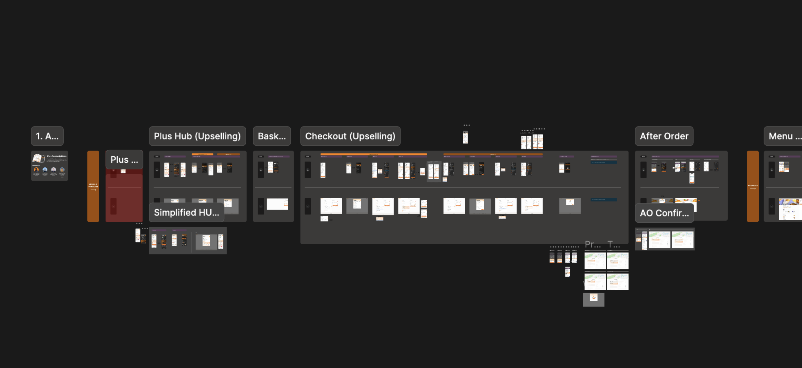
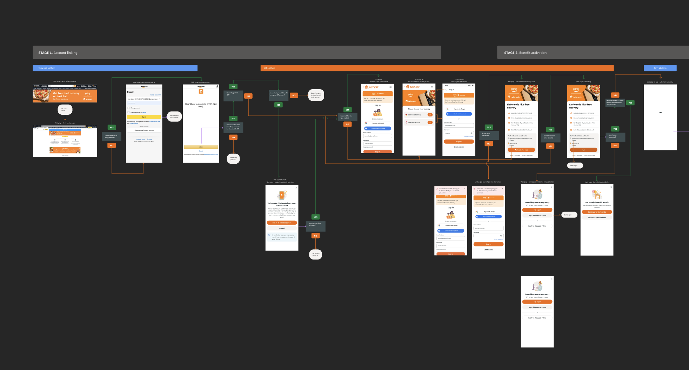
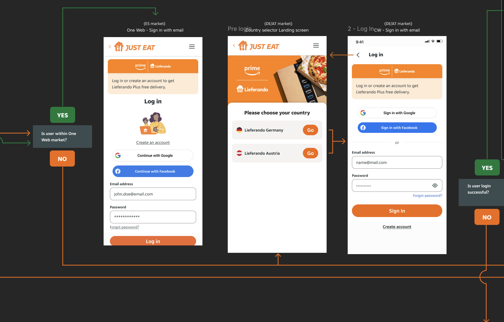

Just Eat Takeaway · Loyalty · 2026
Transforming Transactional Behaviour Into Loyal Memberships
01 · The Challenge
From Utility to Habit
Users treated Just Eat as an occasional treat, not a daily habit. Paid members at competitors were spending 24× more and ordering 10–30% more than non-paid members.
Just Eat faced a critical retention problem: 13% of lapsed customers had left specifically for better loyalty programmes elsewhere.
Tension 01 · Time Horizon
Instant gratification (customer) vs. medium-to-long-term behavioural change (business).
Tension 02 · Competing Metrics
Retention and order frequency are related but distinct — optimising for one could undermine the other.
Tension 03 · Value Exchange
Membership had to feel genuinely valuable to users while remaining commercially sustainable.
02 · Research Finding
"Consumers primarily switched to competitor products because they offered more compelling deals and superior reward programmes."
JET Customer Research — the brief that shaped everything
24×More spending by paid members at competitor platforms
10–30%Higher order frequency vs non-paid members
13%Lapsed customers who left for a better loyalty programme
03 · The Goal
Reframe the Relationship
The strategic goal was twofold: retain existing customers by giving them a tangible reason to stay, and acquire new high-value customers through a compelling, low-friction entry point.
The design challenge: make the value of membership feel immediate — not deferred — so users experience the benefit before they've had time to second-guess the decision.
Instant Rewards
Free delivery activated immediately upon sign-up. No waiting period.
Transparent Savings
Show users exactly where their money goes and what they're saving.
Frictionless Onboarding
Reduce cognitive load at every decision point in the sign-up journey.
04 · My Role
Design Lead — Strategy to Handover
I led design across multiple loyalty initiatives simultaneously — three designers, five squads, two global partnerships. My role wasn't just craft. It was orchestration, alignment, and decision-making under commercial pressure.
- Defined the design vision end-to-end — from discovery through dev handover
- Partnered with researchers and tech leads to shape the 2025/26 loyalty roadmap
- Introduced a two-week workflow to improve cross-functional coordination
- Managed high-stakes stakeholder relationships with Amazon and Lieferando
- Created a shared Figma workspace for cross-squad design visibility
- Introduced hypothesis-first briefs — shifting how the team thinks, not just what they ship
05 · UX Strategy
A Discovery Framework That Shaped the Roadmap
Stage 1
Contextualise the Problem Space
Understanding customers' loyalty behaviour and perceptions through interviews and behavioural data.
Stage 2
Understand the Customer
Creating loyalty behavioural archetypes and design principles to guide implementation.
Stage 3
Define Business Goals
Understanding high-level business strategic objectives and translating them into design intent.
Stage 4
Define Now & North Star
Short and long-term customer-centred strategy, aligned with business objectives. Driven by LEAN experimentation.
06 · The Solution
A 90-Day Pass — Not a Subscription Trap
Research surfaced subscription fatigue. Users didn't object to paying for value — they objected to being locked in. A flexible, one-time-payment 90-day pass made entry feel risk-free, while the bundle rewarded commitment with real savings.
By embedding it as a free-trial upsell directly in the checkout flow, we captured users at peak engagement — already spending, already committed to an order, already in a value-seeking mindset.
The strategic call: the original brief asked for a standard subscription. I challenged it — tasking a designer with competitive audit and concept testing across three models before we committed. The data came back clearly in favour of the bundle.
The Model
One-time-payment · 90-day free delivery · Significant upfront savings vs. paying per order
Entry Point
Free trial upsell at checkout — captured at peak intent, minimal added friction
The Pivot
Away from recurring subscription model — reducing "lock-in" fear while preserving LTV
07 · Design · End-to-End Journey
Unified design across web and native


JET+ one-time-payment — end-to-end, web & native
08 · Results · One-Time-Payment
The Numbers Speak
~4MTotal membership purchases — JET+ one-time-payment
+15%Incremental order frequency among members
9KExtra sign-ups from savings-awareness feature alone
100%Cross-platform — fully live across web, iOS and Android
09 · Amazon & Lieferando Partnership
Two Global Brands. Three Markets. One Activation Moment.
I led the design and cross-platform integration of the Amazon Prime × Just Eat Takeaway partnership — free delivery for Prime members in Germany, Austria, and Spain.
I served as the primary design bridge between senior leadership and global stakeholders at Amazon, ensuring brand alignment and a frictionless experience across two very different ecosystems.
The key trade-off: Amazon's single-URL login architecture conflicted with Just Eat's per-market URLs. I made the call to accept the extra country-selection step rather than compromise the security model — and communicated that decision clearly to both sides.
3Markets live — Germany, Austria, Spain
2Global brands unified under one activation flow
10 · Amazon · Activation Flow Design
Account linking & benefit activation across markets


Live activation experience — Germany, Austria & Spain
11 · Results · Amazon & Lieferando
Partnership Delivered
~2MTotal membership purchases — Amazon/Lieferando cohort
60%Reorder rate among activated Prime members
3Markets live and delivering measurable results
12 · Visual Language
A Premium Identity Built on the PIE System
I worked closely with the design systems team to ensure JET+'s new visual language sits within the main JET PIE library — creating a premium, cohesive identity centred around a vibrant orange palette and sophisticated depth.
The language is built on dynamic gradients — transitioning from bright oranges to deep, dark tones — and high-fidelity 3D-rendered iconography created by the design studio team under my creative direction.
PIE-Native
All components extend the existing JET PIE design system — no divergence, full token compliance.
Dynamic Gradients
Bright oranges to deep dark tones — premium feel, consistent with the JET+ brand tier.
3D Iconography
High-fidelity rendered icons created by design studio with my creative direction.
13 · Behavioural Economics
Design Grounded in Psychological Principles
These principles were embedded into the information architecture, copy, and interaction design to systematically reduce drop-off at every stage of the journey.
⚡ Instant Rewards
Free delivery activated immediately upon sign-up. No waiting period — value felt before doubt sets in.
✦ Peak-End Rule
Delight animation at the activation moment to create a memorable positive peak experience.
⚠ Loss Aversion
"Don't lose your free delivery, trial expires soon" framing — proven more effective than "save money".
👥 Bandwagon Effect
Social proof: "Most JET members are saving €X.00" — normalising membership behaviour.
14 · Trade-offs & Key Decisions
Perfect UX, Balanced Against Real Constraints
Every design initiative involves trade-offs. Navigating these decisions transparently was critical to building trust with stakeholders.
Subscribe at Checkout vs. Separate Funnel
Embedding in checkout maximised conversion but reduced awareness for less frequent users who never reached checkout. Decision: lead with checkout, expand to marketing channels in Phase 2.
Amazon Activation Flow
Amazon's single login URL vs. Just Eat's separate per-market URLs required an extra country-selection step — a necessary friction point to enable global benefit activation without compromising the security model.
Speed vs. Robustness
Engineering pressure to ship fast vs. my push to test three subscription models first. The two-week research sprint cost time but prevented building the wrong product.
Subscription vs. Bundle
Recurring subscription (predictable revenue) vs. one-time bundle (lower friction, lower commitment). Data from concept testing made the call: bundle won on activation and retention metrics.
15 · Led by Experimentation
Hypothesis First. Data Decides.
Experiment 1: £10 Credit vs. Unlimited Free Delivery (UFD) — 10K gifts, 50/50 split, 30-day window
£10 Credit — Winner
3.83%
Redemption rate (vs 1.49% UFD)
3.90%
Incremental order uplift (vs 2.41% UFD)
£2.18
CPIO — Cost-Per-Interaction-Outcome (vs £2.54 UFD)
UFD — 30 Days
1.49%
Redemption rate
Strongest uplift with 6+ engaged users: 10.63% with credit vs. 7.72% control. Credit is more cost-efficient at every segment level.
16 · Overall Impact
6 Million Members. Measurable Results.
6MJET+ memberships across all mechanisms
+15%Incremental order frequency among members
60%Reorder rate — Amazon/Lieferando cohort
3moMVP delivered — web, iOS & Android, fully live
By leading with instant value and removing friction at every entry point, the initiative successfully converted transactional users into loyal members — at scale, across platforms, and under significant commercial and partnership pressure.
17 · What's Next
The Roadmap is Data-Driven & AI-Powered
01
Behavioural Segmentation
Segmenting users by ordering habits to personalise the membership experience — right offer to right archetype.
02
Savings Visibility
Making cumulative savings a core part of the membership identity — reinforcing perceived value with every order.
03
AI-Powered Benefit Add-ons
Dynamic offers tailored to individual user behaviour — moving from one-size-fits-all to genuinely personalised membership.
04
Loyalty Recognition
Ensuring long-term users feel valued — moments of recognition that reinforce the habit loop.
05
Personalised Nudges
Built with Kiro.dev — AI-generated nudges tailored to each behavioural archetype at the right moment.
→
The Measure
All initiatives measured against CPIO (Cost-Per-Interaction-Outcome) — the north star metric I introduced.
18 · North Star
"Becoming the most rewarding platform — creating an ecosystem where high-value actions are recognised, and being a JET+ member unlocks even more value."
The right reward, to the right customer, at the right time.
19 · Behavioural Archetypes
Four Customers. One System.
Alex
The Value-Seeking Pragmatist
Prioritises clear, tangible benefits and an effortless experience. Seeks demonstrable savings — not gamification.
Luke
The Quality-Conscious Seeker
Prioritises food quality, service reliability, and a trustworthy relationship with the platform above everything.
Mia
The Effortless Expediter
Prioritises simplicity, convenience, and seamless experience. Loyalty should require zero cognitive effort.
Sam
The Squeezed Saver
Prioritises financial necessity. Every delivery fee is a decision. Membership must prove its value immediately.
20 · 2026 H1 Roadmap
Three Pillars of the Next Phase
1
Personalised Experiences
"When I subscribe, I want my membership experience to feel rewarding and motivating, so it's enjoyable for me." — Personalised recommendations, reorder nudges, behavioural segmentation.
2
Recognised & Rewarded
"When I subscribe, I want my loyalty recognised and my experience to include moments of delight, so that I feel valued and return." — Celebration moments, milestone recognition.
3
Tangible & Obvious Value
"When I subscribe, I want to sign up at the moment that suits me so that joining feels seamless and convenient." — Free delivery bundles, savings visibility, AI benefit add-ons.
21 · AI-Powered Personalisation
The Right Nudge, to the Right Customer
Built with Kiro.dev — agentic AI development from prototype to production. Personalised nudges tailored to each behavioural archetype, delivered at the right moment in the user journey.
Measuring success with CPIO (Cost-Per-Interaction-Outcome) — the metric I introduced to the team to make experimentation commercially legible to stakeholders.
🔥 Roast me — Sam (Squeezed Saver)
"Seriously, Sam? Stop paying the 'convenience tax.' You've spent £15 on delivery this month — save £3.50 on this order with a free 14-day JET+ trial."
✨ Hype me — Alex (Value-Seeker)
"Alex, did you know? Most JET members save over £20 a month." — Normalising membership through social proof.
22 · Reflection
What I'd Do Differently — and What I'd Keep
Cross-Functional Leadership
A high-fidelity prototype is a negotiation tool. By visualising the end-state early, we forced technical trade-off discussions before they became blockers. I'd do this even earlier next time — prototype before the brief is signed off, not after.
Strategic Problem Framing
I mentored my designers to use the Kano Model and Outcome-Driven Innovation (ODI) to identify underserved needs. This shifted focus from feature delivery to genuine value gaps — and produced better briefs. I'd make this standard practice from day one.
Operational Efficiency
By integrating agentic AI tools like Kiro.dev, I've shown my team how to bridge the design-to-development gap with spec-driven prototypes. This does more than speed things up — it changes what's possible within a sprint cycle.
"The biggest lesson: how to align a cross-functional team on a single vision — and not stop at the MVP."
Thank you
Mark George
Lead Product Designer · Design Leadership
Press Escape to return to case studies